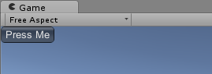

Immediate Mode GUI (IMGUI)
The "Immediate Mode" GUI system (also known as IMGUI) is an entirely separate feature to Unity's main GameObject-based UI System. IMGUI is a code-driven GUI system, and is mainly intended as a tool for programmers. It is driven by calls to the OnGUI function on any script which implements it. For example, this code:
void OnGUI() {
if (GUILayout.Button("Press Me"))
Debug.Log("Hello!");
}
Would result in a button displayed like so:

The Immediate Mode GUI system is commonly used for:
- Creating in-game debugging displays and tools.
- Creating custom inspectors for script components.
- Creating new editor windows and tools to extend Unity itself.
The IMGUI system is not generally intended to be used for normal in-game user interfaces that players might use and interact with. For that you should use Unity's main GameObject-based UI system, which offers a GameObject-based approach for editing and positioning UI elements, and has far better tools to work with the visual design and layout of the UI.
"Immediate Mode" refers to the way the IMGUI is created and drawn. To create IMGUI elements, you must write code that goes into a special function named OnGUI. The code to display the interface is executed every frame, and drawn to the screen. There are no persistent gameobjects other than the object to which your OnGUI code is attached, or other types of objects in the hierarchy related to the visual elements that are drawn.
IMGUI allows you to create a wide variety of functional GUIs using code. Rather than creating GameObjects, manually positioning them, and then writing a script that handles its functionality, you can do everything at once with just a few lines of code. The code produces GUI controls that are drawn and handled with a single function call.
This section explains how to use IMGUI both in your game and in extensions to the Unity editor.